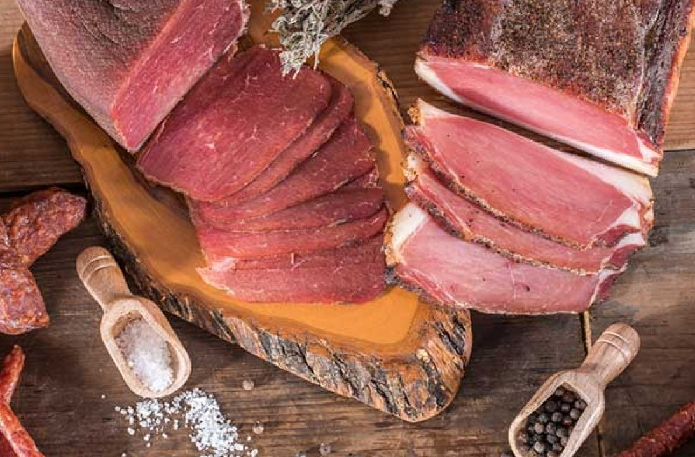

- Arrebol
- Color rojo, especialmente el de las nubes iluminadas por los rayos del sol o el del rostro.
- Desleír
- Disolver algo, especialmente sólido o pastoso en un líquido.
- Ebúrneo
- De marfil.
- Falcado
- Que forma una curvatura semejante a la de la hoz.
- Entronque
- Relación de parentesco entre personas que tienen un tronco común.
- Joyel
- Joya pequeña.
- Ful
- Falso, fallido.
- Haiga
- Automóvil muy grande y ostentoso, normalmente de origen norteamericano
- Isagoge
- Introducción, preámbulo.
- Cosmografía
- Descripción astronómica del mundo.
- Acecinar
- Salar las carnes y ponerlas al humo y al aire para que, enjutas, se conserven.

- Depauperar
- Debilitar, extenuar.